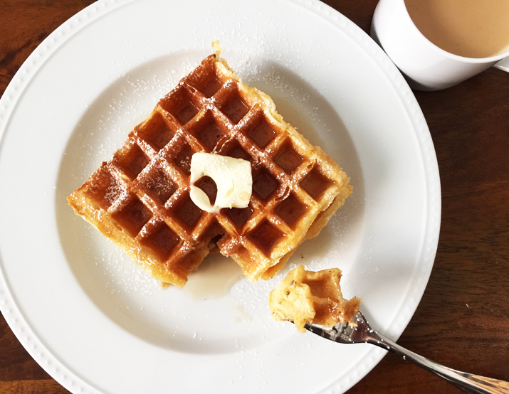

Buttermilk Waffles
Description
These waffles are amazing. There's nothing more to say. Here's the recipe

Ingredients
- 4 3/4 ounces all-purpose flour
- 4 3/4 ounces whole-wheat pastry flour
- 1 teaspoon baking powder
- 1/2 teaspoon baking soda
- 1 teaspoon kosher salt
- 3 tablespoons sugar
- 3 large eggs, beaten
- 4 tablespoons unsalted butter, melted
- 2 cups buttermilk, at room temperature
Instructions
- Heat a waffle iron according to the manufacturer's directions.
- Whisk together the flours, baking powder, baking soda, salt and sugar in a medium bowl.
- Whisk the eggs and butter together in another bowl, and then whisk in the buttermilk.
- Add the wet ingredients to the dry and whisk to combine. Rest the batter for 5 minutes.
- Lightly coat the waffle iron with nonstick spray. Ladle the recommended amount of waffle
batter onto the iron according to the manufacturer's recommendations. Close the iron top and
cook until the waffle is golden on both sides and is easily removed from the iron. Serve immediately
or keep warm in a 200 degree F oven until ready to serve.
This recipe was created by the illustrious Alton Brown